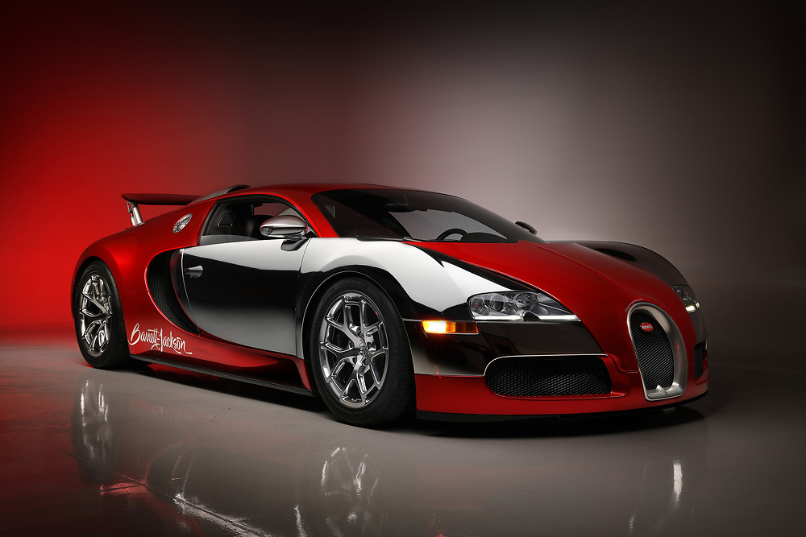

1> 2008 Bugatti-Veyron
* Engine: 8-liter W16 engine
* Horsepower: 1,200 hp
* Torque: 1,106 lb-ft
* Top Speed - 267 mph
* 0 to 60: 2.5 Seconds
* Curb Weight: 4,052–4,387 bs
* MPG - Avg MPG of 10
* Years Made: 2005 - 2015
* Number Produced: 405
.
Original List Price: $1.9mil
2002 Price: $3 million
.
Video
Pictures
Wiki
For Sale

2> 2004 Lamborghini-Gallardo
* Engine: 5.0L V10
* Horsepower: 523 hp @ 8,000 rpm
* Torque: 398 lb-ft.
* Top Speed - 202 mph
* 0 to 60: 3.9 Seconds
* Curb Weight: 2,425.1 lb
* MPG - 11 miles per gallon 9 city and 15 highway
* Years Made: 2003 to 2013
* Number Produced: 14,022
.
Original List Price: Coupe ($186,250) and Spyder ($217,000)
2002 Price: $140,000
.
Video
Pictures
Wiki
For Sale
3> 2004 Ferrari-360
* Engine: 3.6 L V8
* Horse Power: 400 hp at 8,500 rpm
* Torque: 276 lb-ft
* 0-60: 3.6 Seconds
* Maximum Speed: 190 mph
* Weight: 3,064 to 3,197 lbs
* Years Made: 1999 until 2005
* Number Produced: 17,500
* MPG - Avg MPG of 11 - 10/25
.
Original List Price: $151,245
2002 Price: $14,878 to $43,212
.
Video
Pictures
Wiki
For Sale
4> 2004 Austin-Martin_V-12
* Engine: 5.9 L AM11 V12
* Horse Power: 456 Hp @ 6000 rpm
* Torque: 420.41 lb. -ft.
* 0-60: 3.4 Seconds
* Maximum Speed: 183 mph.
* Weight: 3,769.9 lbs.
* Years Made: (2004–2012)
* Number Produced: 16,500
* MPG - Avg MPG of 15 - 13 city / 19 highway
.
Original List Price: $170,000 to $215,000
Price Today: $40,000 and $75,000
.
Video
Pictures
Wiki
For Sale
5> 2005 Jaguar-XK
* Engine: 4.2 L V8
* Horse Power: 294 to 390 hp
* Torque: 303 to 399 lb-ft
* 0-60: 5 Seconds
* Maximum Speed: 125 mph.
* Weight: 3,785 to 4,021 lbs
* Years Made: 1996–2014
* MPG - Avg MPG of 22 - 18 city / 26 highway
.
Original List Price: starting at $74,330
Price Today: $12,000 - $15,000
.
Video
Pictures
Wiki
For Sale
6> 2009 Dodge Viper
* Engine: 8.4 L V10
* Horsepower: 600 hp
* Torque: 560 lb-ft
* Top Speed - 173 mph
* Curb Weight: 3425 lbs
* 0 to 60: 3.9
* MPG - 13 city / 22 highway
* Years Made: 1992 until 2017 (4 were made in 2020)
* Number Produced: 31,500 units
.
Original List Price: $89,000
2002 Price: $75K - $80K
.
Video
Pictures
Wiki
For Sale
7> 2002 Plymouth/Chrysler-Prowler
* Engine: 3.5 L EGG V6
* Horsepower: 253 hp
* Torque: 255 lb-ft
* Top Speed - 126 mph
* Curb Weight:2,850 lbs
* 0 to 60: 7 seconds
* MPG - 18 15 city / 21 highway
* Years Made: 1999 until 2002
* Number Produced: over 11K
.
Original List Price: $38,000 - $43,000
2002 Price: $20K-$30K
.
Video
Pictures
Wiki
For Sale
8> 2009_Corvette
* Engine: 6.2L V8 & 7.0L V8
* Horsepower: 430 to 638 hp.
* Torque: 424 to 604 lb-ft
* Top Speed - 190 mph
* 0 to 60: 0-60: 4.1 seconds.
* Curb Weight: 3,180 to 3,324 lbs
* MPG - combined 18 -- 16 city and 26 mpg
* Number Produced: 8,737
.
Original List Price: around $48,000
2002 Price: 16K - 20K
.
Video
Pictures
Wiki
For Sale
9> 2009 Corvette-Concept
* Engine: 6.2LS3 V8 engine
* Horsepower: 430 horsepower
* Torque: 457 lb⋅ft
* Top Speed - 190 mph
* Curb Weight: 3,217 lbs.
* 0 to 60: 4.1 Seconds
* MPG - combined 18 -- 16 city and 26 mpg
* Years Made: 2009.
* Number Produced: 3
.
2002 Price: $500,000
.
Video
Pictures
Wiki
Web Page
10> 2008 Chevy Camaro SS (5th Generation)
* Engine:6.2 L V8
* Horsepower: 426
* Torque: 455 LB-FT
* Top Speed - 180 mph
* Curb Weight: 2,994
* 0 to 60: 4.4 Seconds
* Number Produced: 699,000
.
Original List Price: $31,000+
2002 Price: 15 - 23K
.
Video
Pictures
Wiki
For Sale
11> 2008 Ford Mustang
* Engine:4.0 V6 & 4.6 V8
* Horsepower: 210 to 300 hp
* Torque: 240 to 320 lb-ft
* Top Speed - 112 mph (V6) 140 (v8)
* 0 to 60: 5.1 (V6) 4.5 (V8) Seconds
* Curb Weight: 3,336 to 3,601 lbs
* Years Made: 1992–1996.
* Number Produced: 23,733
.
Original List Price: $20,000
2002 Price: $8K - $15K (as high as 27K)
.
Video
Pictures
Wiki
For Sale
12> 2008 Nissan 350z
* Engine: 3.5L V6
* Horsepower: 306 hp @ 6,800 rpm
* Torque: 268 lb-ft @ 4,800 rpm
* Top Speed - 155 mph
* 0 to 60: 5.8
* Curb Weight: 3,339 to 3,602 lbs
* MPG - 18 city / 25 highway
* Years Made:2002 - 2009
* Number Produced: 173,924
.
Original List Price: MSRP: $11,950 – $13,967
2002 Price: about $13,000
.
Video
Pictures
Wiki
For Sale


{kind=link}